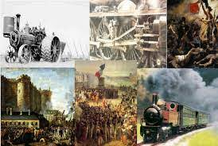

Esta sección puede tratar sobre el concepto de la "Doble Revolución", que se refiere a la interconexión de la Revolución Industrial y la Revolución Francesa en la historia europea. Puede explorar cómo estos eventos se influyeron mutuamente y transformaron tanto la economía como la política de la época.
La expresión "Doble Revolución" se utiliza en el contexto histórico para referirse a dos importantes transformaciones que ocurrieron en Europa durante el siglo XIX:
Revolución Industrial: Este término se refiere a un período de profundos cambios económicos, tecnológicos y sociales que comenzó en Gran Bretaña en la segunda mitad del siglo XVIII y se extendió por Europa y América del Norte durante el siglo XIX. Durante la Revolución Industrial, hubo avances significativos en la producción industrial, la tecnología y el transporte, lo que llevó a un cambio masivo de una economía agraria y artesanal a una economía industrial y comercial. Esto incluyó la mecanización de la producción, el desarrollo del ferrocarril y la aparición de fábricas. Este cambio transformó la sociedad, la economía y la forma en que la gente vivía y trabajaba.
Revolución Política: Refiere al período de cambios políticos y sociales que ocurrieron en Europa durante y después de la Revolución Francesa (1789-1799). La Revolución Francesa y los eventos que le siguieron llevaron a la abolición de los regímenes monárquicos absolutos en varios países europeos y al surgimiento de ideales políticos como la democracia, la igualdad y los derechos humanos. Esto incluyó el desarrollo de sistemas políticos basados en la representación popular, la constitución y el estado de derecho.